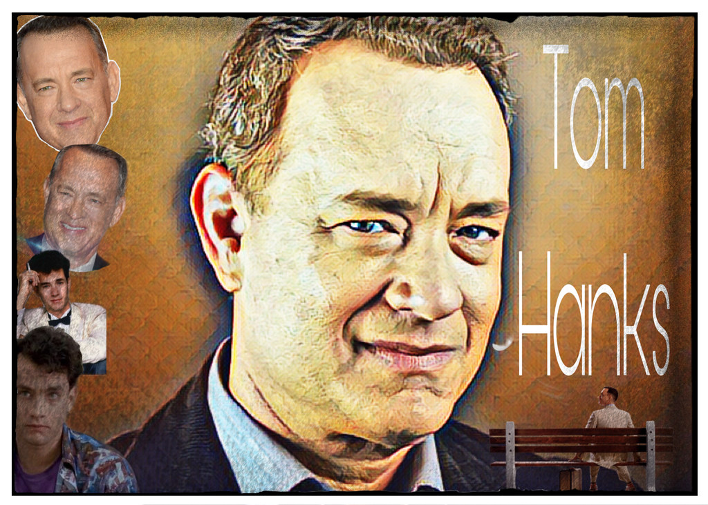
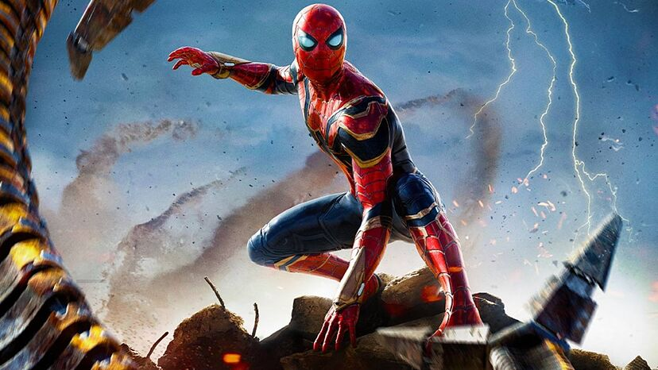
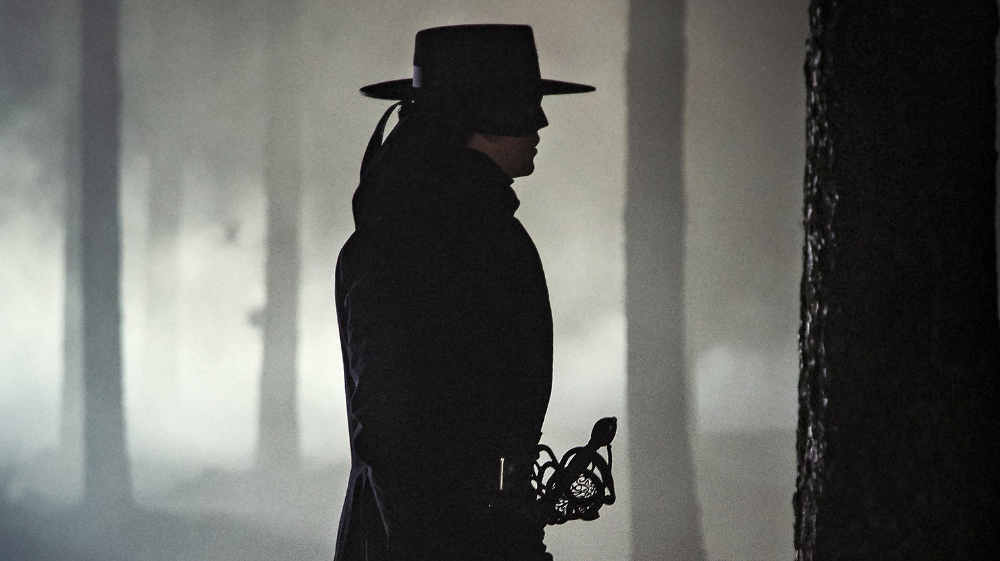
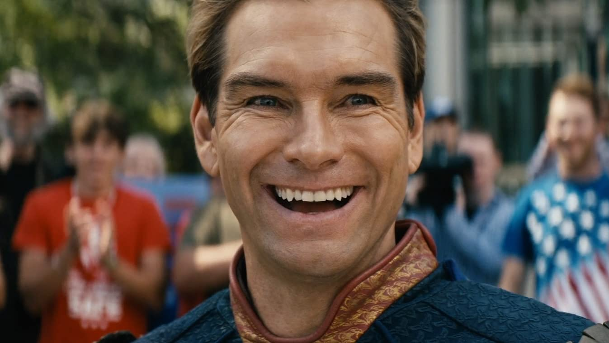

Noticias de cine
Pagina en la que encontraras lo ultimo en noticias sobre actores y actrices, peliculas, series...
actores

Josh Hutcherson se estrenó en su primera gran película tirándose un pedo en la cara de Tom Hanks: "El momento más vergonzoso de mi vida"
Autorias y licencias: https://www.flickr.com/photos/acemegarex/50032930518
Leer mas

Tom Holland ya está manteniendo conversaciones para 'Spider-Man 4', pero no está todo ganado: "No haré otra solo por hacerla"
Autorias y licencias: https://www.marca.com/tiramillas/cine/2021/11/09/618aa6aae2704e5faf8b4599.html
Leer mas
series

Prime Video ha decidido que el próximo 25 de enero de 2024 se estrene Zorro, la serie protagonizada por Bernardeau y Renata Notni
Autorias y licencias: https://filasiete.com/noticias/actualidad-series/zorro-serie-estreno/
Leer mas

Prime Video expande una vez más el universo de 'The Boys' con un nuevo 'spin-off' con Diego Luna y Gael García Bernal
Autorias y licencias: https://www.imdb.com/title/tt1190634/
Leer mas
películas

La policía acabó alertada por el rodaje de esta película de terror: un fallo técnico tuvo la culpa
Autorias y licencias: https://www.deviantart.com/favorisxp/art/Scream-6-Animated-Wallpaper-954667346
Leer mas